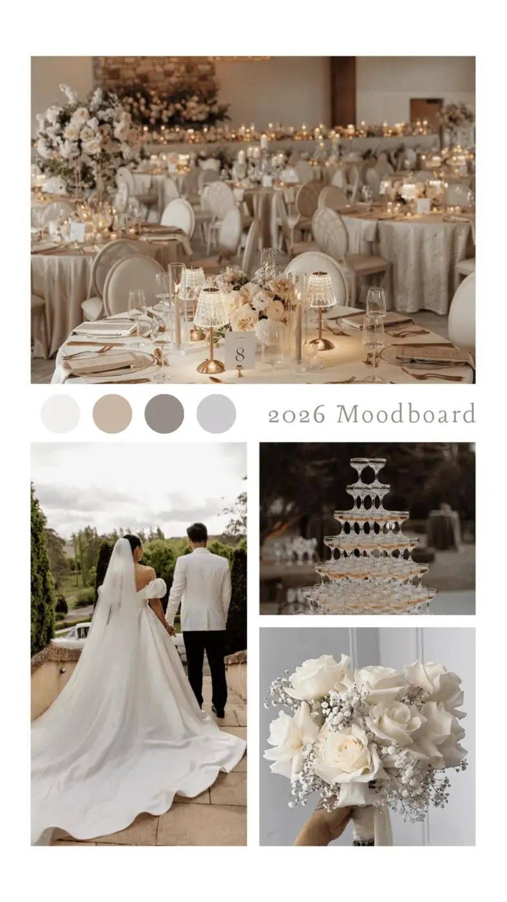
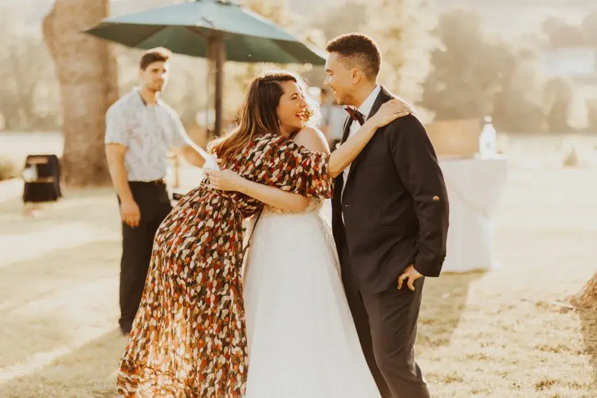
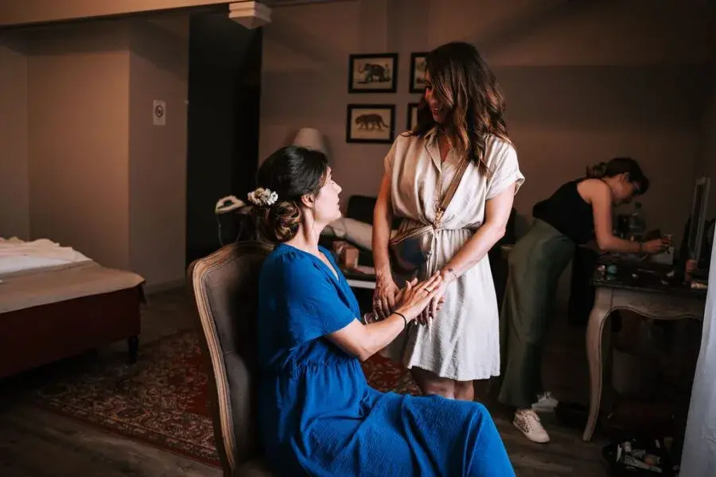
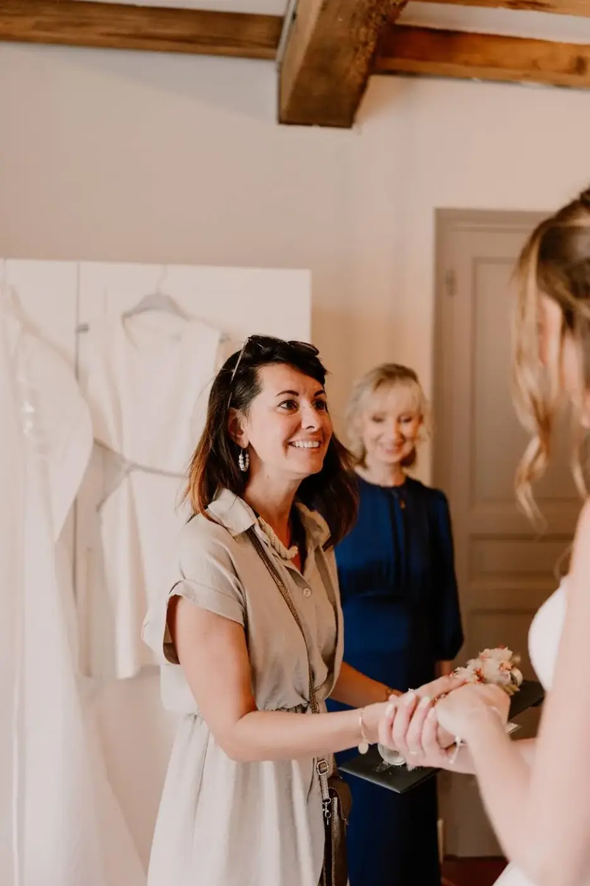
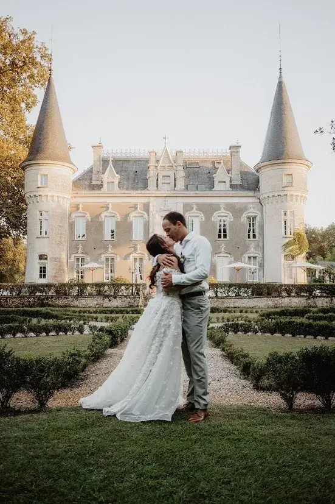
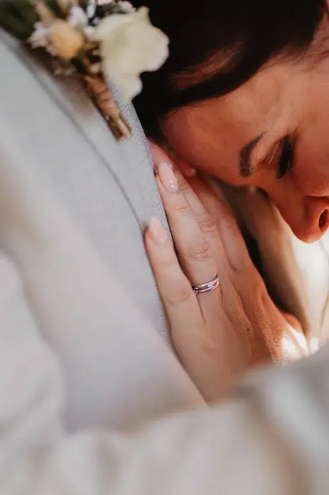

Sur les photos, tout semble simple : des mariés rayonnants, une décoration parfaite, une ambiance magique.
Mais derrière cette apparente facilité, il y a des mois de préparation, des dizaines de prestataires à coordonner, et une wedding planner qui veille dans l’ombre à ce que chaque détail soit exactement à sa place.
Je suis wedding planner et designer en Nouvelle-Aquitaine, et aujourd’hui, j’ai envie de vous emmener dans les backstages de mon métier. Parce que si les mariages sont faits de paillettes et d’amour, ils sont aussi faits de logistique, d’émotion et de passion. Voici ce que vous ne voyez pas toujours…
Avant le grand jour – La préparation minutieuse
Les premières rencontres avec les mariés
Tout commence toujours par une rencontre. Un moment précieux, souvent chargé d’émotion, où deux personnes me confient l’un des jours les plus importants de leur vie. Ce premier échange est bien plus qu’un simple rendez-vous : c’est le début d’une aventure humaine, une parenthèse hors du temps où l’on apprend à se découvrir.
Autour d’un café, lors d’un appel ou d’une visioconférence, la conversation se fait naturellement. On parle de leur histoire, de leur rencontre, de ce qui les unit. On rit, parfois on s’émeut, et très vite, on rêve ensemble. Ces instants d’échange sont essentiels : ils me permettent de comprendre qui ils sont, ce qu’ils aiment, et surtout ce qu’ils souhaitent ressentir le jour J.
C’est souvent à ce moment-là que naissent les premières inspirations. Un mariage bohème et authentique au cœur des vignobles bordelais, une cérémonie laïque intimiste sous les pins du bassin d’Arcachon, ou encore une réception élégante et raffinée dans un château du Périgord. Chaque détail commence à prendre forme, guidé par leurs envies, leur personnalité et leur vision du mariage.
Chaque couple possède son propre univers, ses codes, ses émotions. Mon rôle est d’écouter, de ressentir et de traduire cette singularité pour imaginer une célébration qui leur ressemble profondément. Transformer leurs rêves, leurs émotions et leur histoire en une expérience unique et inoubliable : voilà le cœur de mon métier de wedding planner.
La recherche de prestataires et le puzzle logistique
Une fois le concept du mariage validé, commence alors une étape clé de l’organisation : la recherche et la sélection des prestataires. Traiteur, photographe, fleuriste, DJ, décorateur, officiant de cérémonie, papeterie, hébergements… chaque professionnel joue un rôle essentiel dans la réussite du grand jour.
Derrière cette sélection se cachent de nombreuses heures de recherche, de comparaisons, de rendez-vous et d’échanges. Mais au-delà des compétences techniques, je porte une attention particulière à l’humain. Car un mariage réussi repose avant tout sur une équipe soudée, bienveillante et alignée autour d’une même vision : celle des mariés.
Mon rôle est de créer de véritables connexions entre les prestataires et le couple, afin que chacun comprenne l’univers du mariage et s’y investisse pleinement. Cette synergie permet d’assurer une organisation fluide, une communication efficace et une atmosphère sereine tout au long des préparatifs.
Chaque élément est pensé dans les moindres détails : horaires de montage, gestion des livraisons, coordination le jour J, sans oublier l’anticipation d’un plan B en cas d’aléas météo. Et bien sûr, le respect du budget reste au cœur de chaque décision, afin de proposer des solutions adaptées sans jamais compromettre la qualité ni l’émotion.
C’est cette rigueur alliée à une approche humaine qui permet de transformer un projet en un mariage harmonieux, maîtrisé et inoubliable.


Le moodboard – naissance du concept
Avant même que les premiers bouquets ne soient livrés ou que la décoration ne prenne vie, tout commence par le moodboard. C’est une étape profondément créative, un moment clé où le concept du mariage se dessine visuellement. J’y rassemble des inspirations, des palettes de couleurs, des textures, des matières, des jeux de lumière et des ambiances afin de donner une direction claire au projet.
Le moodboard est un véritable fil conducteur. Il permet aux mariés de se projeter, de ressentir l’atmosphère de leur journée et d’imaginer l’univers qui les entourera. On pourrait le comparer à la bande-annonce du mariage à venir : l’âme du projet prend forme, les émotions se traduisent en images, et chaque détail trouve peu à peu sa place.
En Nouvelle-Aquitaine, les possibilités sont infinies et les styles extrêmement variés. Un mariage bohème chic inspiré des Landes, une célébration élégante et raffinée au cœur des vignobles du Médoc, ou encore un mariage nature et épuré face à l’océan, bercé par le bruit des vagues. Chaque territoire, chaque paysage devient une source d’inspiration unique.
Ce moodboard sert ensuite de base de travail pour l’ensemble des prestataires. Il garantit une harmonie visuelle et émotionnelle, et assure que chaque élément , de la décoration florale à la papeterie, en passant par le mobilier et les tenues, raconte la même histoire : celle des mariés.
Les jours qui précèdent – entre excitation et précision
Les derniers ajustements
À J-3, tout s’accélère. L’effervescence monte et chaque détail prend une importance capitale. Les prestataires confirment leurs horaires d’arrivée et d’installation, les derniers paiements sont effectués, et je révise encore et encore le rétroplanning pour m’assurer que tout est parfaitement orchestré. C’est une véritable course contre la montre, où chaque minute compte.
Les journées s’allongent, les soirées aussi. Je passe des appels tard le soir pour ajuster un timing, confirmer une livraison ou anticiper un imprévu. Je vérifie les stocks de bougies, les éléments de décoration, les compositions florales. Je prépare les kits de secours, ceux que l’on espère ne jamais utiliser, mais qui sauvent une journée lorsqu’un détail échappe au contrôle.
Plans de salle, plans de table, déroulé de la cérémonie, check-lists finales… tout est passé au crible. Je m’attarde sur ces petits détails que personne ne remarque vraiment, mais qui font toute la différence le jour J. Ceux qui assurent la fluidité, le confort et la sérénité des mariés et de leurs invités.
Mon objectif à ce stade est clair : que les futurs mariés puissent lâcher prise en toute confiance. Car lorsque tout est anticipé, vérifié et sécurisé, ils peuvent pleinement profiter de chaque instant, le cœur léger, tandis que je veille en coulisses au bon déroulement de leur journée.
L’installation – l’art de tout orchestrer
La veille du mariage est souvent l’un des moments les plus intenses et les plus émouvants de toute l’aventure. C’est là que les mois de préparation prennent enfin vie. Avec mon équipe, nous arrivons sur le lieu du mariage, souvent dès le matin, chargés de cartons, de fleurs, de tissus… et de rêves soigneusement imaginés.
Peu à peu, un espace encore vide se transforme en un lieu chargé d’émotion. Chaque élément trouve sa place : un ruban délicatement noué, une bougie positionnée avec précision, une assiette soigneusement dressée. Rien n’est laissé au hasard. Chaque détail participe à raconter une histoire et à créer une atmosphère unique.
C’est à ce moment-là que mon rôle de wedding designer s’exprime pleinement. Je joue avec les volumes, la lumière naturelle ou tamisée, les matières et les textures pour donner du relief à l’ensemble. J’ajuste, je déplace, je peaufine jusqu’à ce que l’harmonie soit parfaite et fidèle au concept imaginé avec les mariés.
Pendant ce temps, les futurs mariés peuvent se détendre et savourer l’excitation des heures à venir. Ils savent que tout est entre de bonnes mains. C’est précisément pour cela qu’ils m’ont choisie : pour vivre pleinement ces instants précieux, sans stress ni pression, pendant que je gère chaque détail en coulisses.


Le jour J – dans l’ombre de la lumière
L’émotion au cœur du métier
Le jour du mariage, je suis partout… et nulle part à la fois. Présente sans être visible, attentive à chaque détail, à chaque regard. J’anticipe, j’ajuste, je rassure, je souris, je répare quand il le faut et j’applaudis en silence. Mon rôle est de faire en sorte que tout se déroule avec fluidité, sans jamais perturber la magie du moment.
Dans mon sac, il y a toujours l’essentiel : des épingles, du ruban adhésif, des mouchoirs, un fil et une aiguille, un plan de secours, et surtout, beaucoup d’amour. Car au-delà de l’organisation et de la logistique, ce métier se vit avec le cœur.
Les moments les plus forts sont souvent les plus simples :
- Lorsque la mariée enfile sa robe et que l’émotion la submerge.
- Quand les invités découvrent le décor pour la première fois, les yeux brillants.
- Quand la musique démarre, que le silence se fait, et que tout devient soudainement réel.
Ce sont ces instants suspendus, chargés d’émotion, qui donnent tout son sens à mon métier. Et à chaque mariage, je me fais la même réflexion, le cœur rempli de gratitude :
« Oui, tout en valait la peine. »
Les imprévus – mon quotidien de funambule
Un mariage sans imprévu n’existe pas. Et c’est sans doute ce qui rend chaque événement unique. Malgré des mois de préparation minutieuse, il y a toujours ce petit grain de sable prêt à bousculer le programme : une pluie soudaine qui oblige à repenser la cérémonie, un prestataire retardé, un bouton de costume qui se décroche à la dernière minute.
Mon métier consiste alors à avancer sur un fil, en équilibre permanent. Anticiper, réagir, décider vite et bien. Trouver une solution efficace tout en gardant le sourire, rassurer les mariés, préserver l’ambiance et l’émotion. Souvent, ces ajustements se font en coulisses, dans la plus grande discrétion.
C’est là toute la beauté, et l’exigence, du métier de wedding planner : savoir transformer un imprévu en opportunité. Une cérémonie déplacée devient plus intime, un retard se transforme en moment de partage, un détail réparé à la hâte ne laisse derrière lui qu’un souvenir parfait.
Et lorsque personne ne se rend compte de ce qui a failli dérailler, je sais que ma mission est accomplie.

Pourquoi j’aime montrer les coulisses
Beaucoup de gens imaginent que le métier de wedding planner se résume à choisir des fleurs, coordonner quelques prestataires ou organiser des fêtes. Mais c’est bien plus que cela : c’est accompagner des histoires d’amour, comprendre des émotions et transformer des rêves en réalité.
Montrer les coulisses, c’est mettre en lumière tout ce travail invisible qui rend chaque mariage unique. C’est partager la réalité du métier : la préparation minutieuse, la créativité, les nuits blanches, les imprévus gérés dans l’ombre, et surtout, toutes les émotions qui traversent cette aventure.
C’est aussi une manière de rassurer les futurs mariés. Leur dire, à travers ces images et ces récits :
“Oui, votre mariage sera parfait. Parce que derrière, une équipe entière veille à ce que la magie opère.”
Partager les backstage d’un mariage, c’est révéler la rigueur, la passion et l’engagement nécessaires pour que tout se passe sans accroc. C’est un témoignage authentique du métier de wedding planner, qui va bien au-delà de l’apparence festive pour célébrer le cœur de notre travail : l’émotion, la préparation et l’attention portée à chaque détail.
En Nouvelle-Aquitaine, un terrain de jeu magique
Être wedding planner en Nouvelle-Aquitaine est un véritable privilège. La région offre un éventail de décors naturels à couper le souffle : les vignobles de Bordeaux, les plages sauvages du bassin d’Arcachon, les forêts paisibles des Landes, et les magnifiques châteaux du Lot-et-Garonne. Chaque lieu possède son charme unique et devient une source d’inspiration pour créer des mariages mémorables.
Ici, chaque couple peut trouver le décor parfait pour son histoire :
- Un mariage champêtre dans une grange rénovée, avec des fleurs sauvages et des touches rustiques.
- Un mariage élégant dans un château entouré de vignes, où l’histoire et le raffinement se mêlent.
- Un mariage bohème les pieds dans le sable, bercé par le bruit des vagues et la lumière dorée du coucher de soleil.
Cette diversité géographique et stylistique stimule ma créativité au quotidien et me pousse à imaginer des univers toujours différents, adaptés à chaque couple. La Nouvelle-Aquitaine n’est pas seulement un lieu de réception : c’est un véritable terrain de jeu pour concevoir des mariages uniques, authentiques et profondément mémorables.
En vidéo – les backstages d’une wedding planner


En bref,
Être wedding planner, ce n’est pas seulement organiser un événement : c’est une véritable vocation. C’est aimer les gens, écouter leurs histoires, comprendre leurs émotions et les accompagner pour que chaque instant devienne mémorable. C’est être la gardienne de l’harmonie, celle qui veille à ce que tout se déroule sans accroc, même lorsque le vent tourne ou que les imprévus
Lovely Day Event c'est plusieurs types de prestations
L'organisation de mariage
Je vais intervenir sur toutes les étapes de vos préparatifs et vous guider dans vos choix. Je suis force de proposition pour que votre mariage ne ressemble qu’à vous.
Décoration de mariage
Créative et passionnée, je suis certifiée Wedding Designer et je conçois une ambiance scénographique qui correspond au thème de votre mariage.
Coordination le jour J
Je serai le chef d’orchestre pour gérer les différents prestataires, la mise en place de votre décoration et le déroulement de cette belle journée.